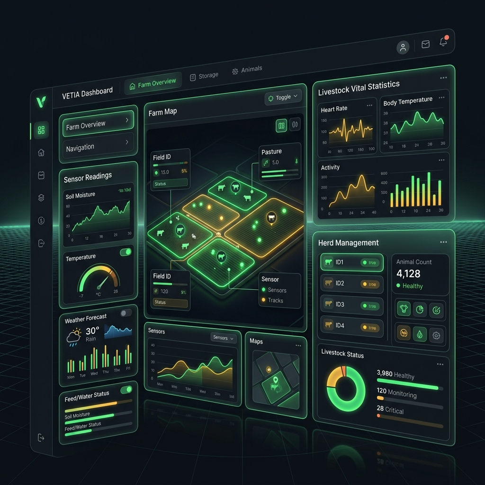
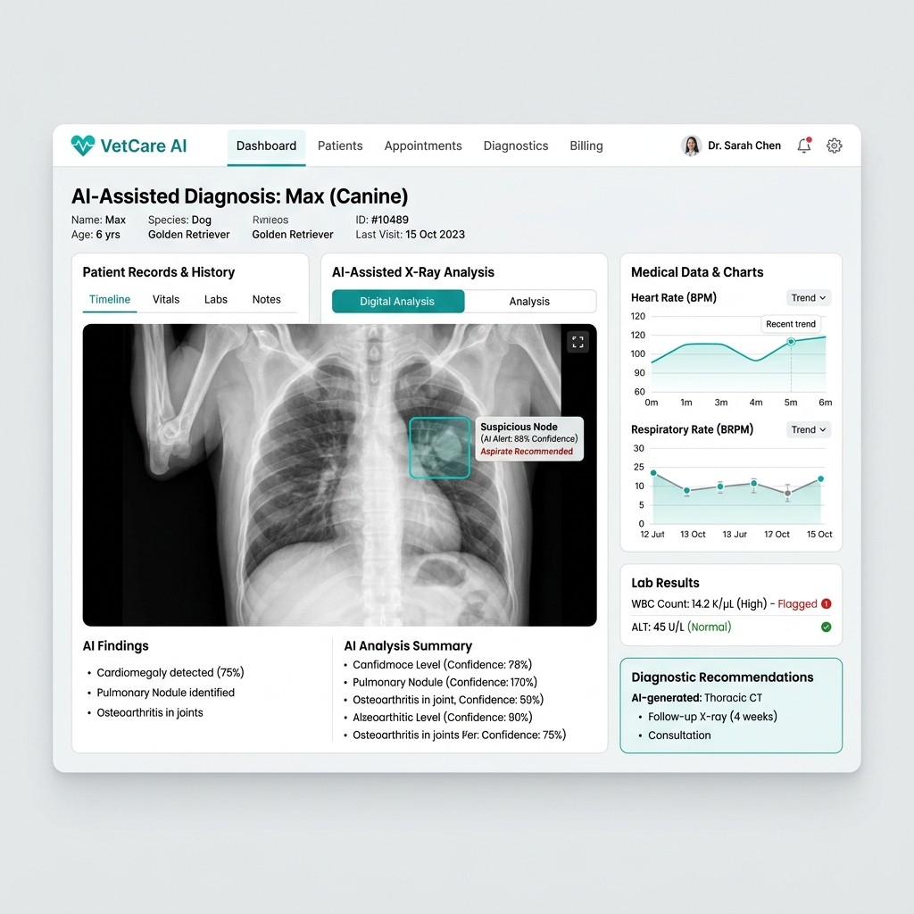
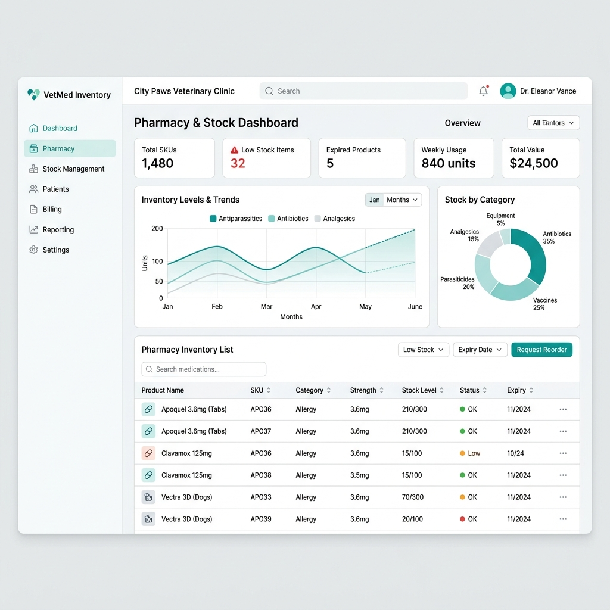
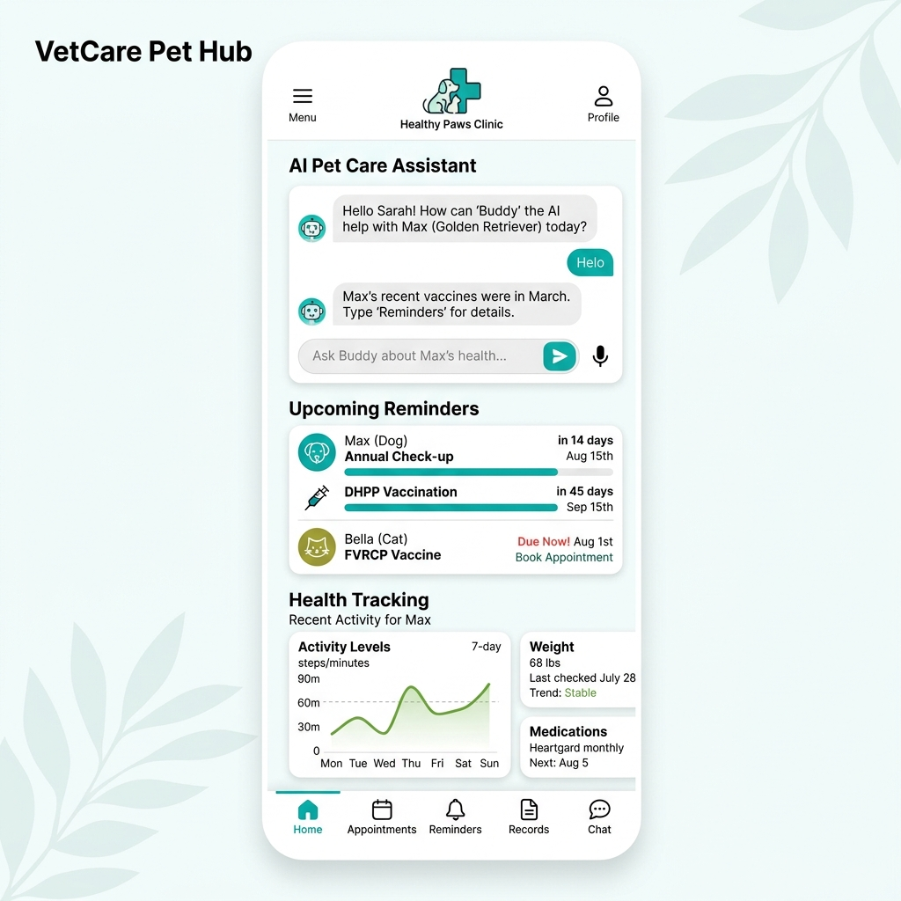

VetIA
O assistente clínico digital desenhado para modernizar hospitais e clínicas veterinárias. Diagnóstico assistido por Deep Learning, automatização inteligente de stocks e comunicação proativa com tutores.

Fluxo Clínico
Como o VetIA Otimiza a sua Clínica
Um ecossistema contínuo que conecta a triagem, o diagnóstico, o internamento e a fidelização do tutor.
Triagem Inteligente
Recolha prévia de sintomas via assistente de conversação (NLP) antes mesmo do animal entrar no consultório.
Diagnóstico Assistido
Cruzamento de parâmetros analíticos e imagens radiográficas com algoritmos preditivos de apoio à decisão médica.
Prescrição & Stocks
Abatimento automático em inventário com cálculo de posologia adaptado à espécie, idade e peso do paciente.
Acompanhamento
Lembretes automáticos pós-cirúrgicos e avisos preventivos de vacinação e desparasitação enviados aos tutores.
Suporte à Decisão
Diagnóstico Assistido por Deep Learning
Acelere a identificação de anomalias radiológicas, padrões laboratoriais e patologias complexas com o motor de IA treinado especificamente para medicina veterinária.
- Deteção preliminar de padrões em exames complementares de diagnóstico.
- Redução substancial da margem de erro em situações de urgência.
- Histórico clínico unificado com linha temporal de evolução do animal.

Farmácia & Logística
Automatização Total de Stocks e Medicamentos
Elimine perdas financeiras com produtos fora de validade e garanta que os medicamentos críticos estão sempre disponíveis sem necessidade de inventários manuais exaustivos.
- Abatimento em tempo real a cada ato clínico ou cirúrgico.
- Alertas inteligentes de ponto de encomenda e prazos de validade.
- Rastreabilidade integral de lotes e substâncias controladas.

Relacionamento & Fidelização
Comunicação Fluida com Tutores via NLP
Mantenha os tutores informados e cumpra os planos de saúde preventivos com um assistente virtual capaz de responder a dúvidas frequentes e agendar procedimentos.
- Processamento de Linguagem Natural adaptado ao vocabulário dos tutores.
- Envio autónomo de relatórios de internamento e planos de medicação caseira.
- Aumento comprovado na taxa de retorno para vacinação e consultas anuais.

Compatibilidade
Integra com o hardware que já utiliza
Compliance & Privacidade
Os dados dos tutores e pacientes, blindados
Conformidade RGPD
Proteção absoluta e encriptação end-to-end dos dados pessoais e financeiros dos tutores, cumprindo a lei europeia.
Histórico Inquebrável
Backups diários georredundantes. O histórico clínico dos pacientes e radiografias nunca se perdem, independentemente do que aconteça na clínica.
Permissões Granulares
Acesso baseado em perfis (RBAC). Médicos, enfermeiros e equipa de receção acedem apenas à informação estritamente necessária.
O VetIA não nasceu num laboratório isolado. Foi forjado e iterado na exigência real do dia a dia clínico, para resolver problemas reais.
Uma parceria estratégica de engenharia clínica entre a We Care For Pet e a ASYDIM. O objetivo? Reduzir a carga burocrática e devolver o tempo dos médicos aos pacientes.
Capacite a sua equipa veterinária com IA.
Solicite uma sessão de demonstração e descubra como o VetIA reduz a carga burocrática para que os médicos se foquem nos pacientes.
Agendar Demonstração Clínica